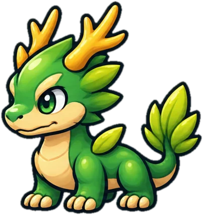

Verdex
 GrassDragon
GrassDragonEvolution line
Tap a stage to read its story.
About Verdex
Verdex is a small bright green quadruped with a rounded head topped by golden-tipped hornlets, a wide friendly mouth, and a short leaf-shaped tail. Its stubby limbs carry it in a cheerful waddling trot along the Dragon Spire's lower terraces where ferns and mosses still grow among the old stone. Two leaf-sprout appendages flutter near its neck like tiny wings in training. It constantly gnaws on the stone ledges - not to eat them, but because its teeth grow fastest against hard material and it must keep them filed.
Field note: Verdex's hornlets grow one millimetre per week; keepers can date a photograph of one by measuring the horn length.
Habitat
Dragon Spire. Verdex and its family are found in the Dragon Spire. See everyone who lives there.
Favorite snacks
Share a Bond Food that matches its types to become friends. Verdex loves:
Grass snack
Dragon snack
A Bond Food is not a trick. It joins your spirit with the Kimuro's spirit, and only when it chooses you.
Meet the Kimuro Friends
Print the Kimuro adventure packs: mazes, cards, a board game and Bond Mark medals.
See the printable packs